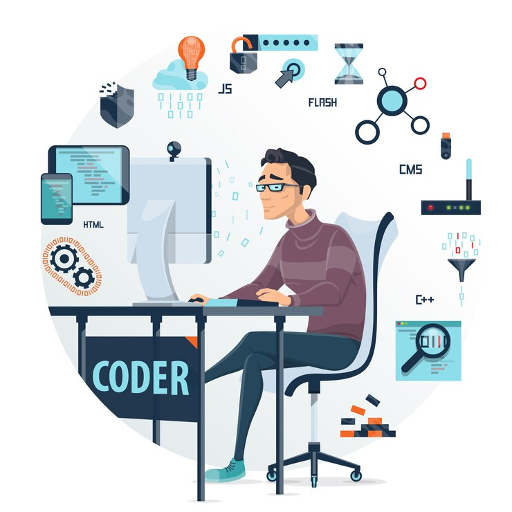

Python Developer
Introduction :
A Python developer is a skilled professional proficient in utilizing the Python programming language to create a wide range of applications, software, and systems. Python's popularity stems from its simplicity, readability, and versatility, making it an ideal choice for various domains including web development, data analysis, scientific computing, artificial intelligence, and more. Python developers leverage the language's extensive ecosystem of libraries and frameworks such as Django, Flask, NumPy, and TensorFlow to streamline development processes and build robust solutions.
These developers possess a deep understanding of Python's syntax, data structures, and core concepts, enabling them to write efficient, scalable, and maintainable code. They collaborate closely with cross-functional teams, including designers, project managers, and quality assurance engineers, to develop innovative software solutions that meet client requirements and industry standards.
Python developers are problem solvers at heart, adept at analysing complex problems and devising effective solutions using Python's rich set of tools and libraries. They stay abreast of emerging trends and technologies in the Python ecosystem, continually honing their skills through self-learning, online resources, and community engagement. Overall, Python developers play a pivotal role in driving technological advancements and delivering high-quality software solutions across diverse industries, making them indispensable assets in the realm of modern software development.
Pre-requisite Knowledge :

- Basic Programming Knowledge: Understanding fundamental programming concepts such as variables, data types, loops, conditionals, functions, and object-oriented programming (OOP) principles is essential.
- Knowledge of Python: Familiarity with the syntax, data structures (lists, dictionaries, tuples, etc.), control flow statements, and functions in Python is necessary. Online tutorials, courses, and Python documentation are valuable resources for learning Python.
- Understanding of Development Environments: : Proficiency in using Integrated Development Environments (IDEs) like PyCharm, Visual Studio Code, or Jupyter Notebook, as well as familiarity with text editors and command-line interfaces, is beneficial.
- Version Control: Basic understanding of version control systems such as Git is important for collaborating with other developers and managing code repositories.
- Web Development Basics : Knowledge of HTML, CSS, and JavaScript is advantageous for web development projects, along with understanding web frameworks like Django or Flask.
- Data Structures and Algorithms: A solid understanding of data structures (arrays, linked lists, stacks, queues, trees, etc.) and algorithms is beneficial for solving problems efficiently and optimizing code.
- Database Fundamentals: Familiarity with relational databases (SQL) and NoSQL databases, as well as basic SQL queries, is useful for working with data-driven applications.
- Continuous Learning: Python developers should have a mindset for continuous learning to keep up with new updates, libraries, and best practices in the Python ecosystem.
{kind=link}
Scope in Masters :

A master's degree in Python or related fields offers a promising scope for individuals seeking to advance their careers in the technology industry. With Python's widespread adoption across various domains such as web development, data science, artificial intelligence, cybersecurity, and more, there is a growing demand for skilled professionals with advanced expertise. Master's programs provide opportunities for in-depth exploration of advanced topics within Python development, enabling students to specialize in areas of their interest such as machine learning, big data analytics, or cloud computing. Additionally, these programs often incorporate research projects, internships, and industry collaborations, allowing students to gain practical experience and build a strong professional network. Graduates with master's degrees in Python are well-positioned for leadership and management roles within tech companies, as well as opportunities for global employment. With the continuous evolution of technology and the increasing reliance on digital solutions, mastering Python through a master's degree program offers a pathway to a rewarding and dynamic career with ample opportunities for growth and innovation.
Best Countries and Colleges :
| Country | Colleges |
|---|---|
| United States | Stanford University, Massachusetts Institute of Technology (MIT), University of California Carnegie Mellon University |
| United Kingdom | University of Oxford, University of Cambridge, Imperial College London,University College London(UCL) |
| Canada | University of Toronto, University of British Columbia(UBC), McGill University, University of Waterloo |
| Germany | Technical University of Munich (TUM),RWTH Aachen University,Humboldt University of Berlin,Ludwig Maximilian University of Munich |
| Australia | University of Melbourne, Australian National University(ANU), University of Sydney,University of New South Wales(UNSW) |
Current Demand Scenario :
The demand for Python developers is currently soaring due to several key factors. Firstly, Python's simplicity, versatility, and extensive library support have made it one of the most sought-after programming languages globally. As businesses in diverse industries increasingly turn to technology solutions, the need for skilled Python developers remains high.Furthermore, the rapid growth of the tech industry, with a focus on areas such as web development, data science, machine learning, artificial intelligence, and cybersecurity, has further fueled the demand for Python expertise. Python's dominance in data science and machine learning, facilitated by libraries like NumPy, Pandas, and scikit-learn, has led to a surge in demand for developers proficient in these domains.
Python frameworks such as Django and Flask are widely used in web development, contributing to the demand for Python developers in this sector. The rise of e-commerce, social media, and cloud computing has further accelerated the need for Python-savvy web developers.Moreover, the shift towards remote work has expanded opportunities for Python developers, as companies increasingly embrace distributed teams. This trend has opened up a global talent pool and increased demand for developers who can effectively collaborate remotely.Python's flexibility and agility also make it a preferred choice for startups and innovative projects. As the startup ecosystem continues to thrive, there's a growing demand for Python developers who can contribute to building scalable, innovative solutions.
Overall, Python developers with expertise in areas such as data science, machine learning, web development, and cybersecurity are well-positioned to capitalize on the current and future job opportunities driven by Python's versatility, ease of use, and relevance in emerging technologies.
Job Roles :
Python developers can find employment in various roles across different industries. Here are some common job titles and descriptions for Python developers:
Expected Salary :
The salary of a Python developer can vary widely based on several factors such as location, experience, education, industry, company size, and specific job responsibilities. Here are some general salary ranges for Python developers:
- Entry-Level Python Developer: In entry-level positions with 0-2 years of experience, Python developers can expect to earn salaries ranging from $50,000 to $80,000 per year in the United States. In countries like India, entry-level salaries may range from ₹3,00,000 to ₹6,00,000 per year.
- Mid-Level Python Developer: With 2-5 years of experience, mid-level Python developers can command salaries ranging from $80,000 to $120,000 per year in the US. In India, mid-level salaries may range from ₹6,00,000 to ₹12,00,000 per year.
- Senior-Level Python Developer: Senior Python developers with 5+ years of experience can earn salaries upwards of $120,000 per year in the US, with some earning well over $150,000 or more, especially in tech hubs like Silicon Valley. In India, senior-level salaries can range from ₹12,00,000 to ₹25,00,000 per year or higher depending on experience and expertise.
- Specialized Roles (e.g., Data Scientist, Machine Learning Engineer): Python developers specializing in fields like data science, machine learning, or artificial intelligence may command higher salaries, often exceeding $100,000 per year for mid-level positions and significantly more for senior roles.
- Freelance or Contract Work: Python developers working on a contract or freelance basis may charge hourly rates ranging from $50 to $150 or more depending on their skill level, project complexity, and location.